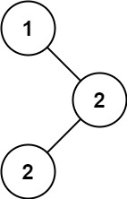

| Category | Difficulty | Likes | Dislikes |
|---|---|---|---|
| Algorithms | Easy | 4080 | 811 |
tree | depth-first-search | binary-search-tree | binary-tree
amazon | google | facebook
Given the root of a binary search tree (BST) with duplicates, return all the mode(s) (i.e., the most frequently occurred element) in it.
If the tree has more than one mode, return them in any order.
Assume a BST is defined as follows:
Example 1:

Input: root = [1,null,2,2]
Output: [2]Example 2:
Input: root = [0]
Output: [0]
Constraints:
[1, 104].-105 <= Node.val <= 105Follow up: Could you do that without using any extra space? (Assume that the implicit stack space incurred due to recursion does not count).